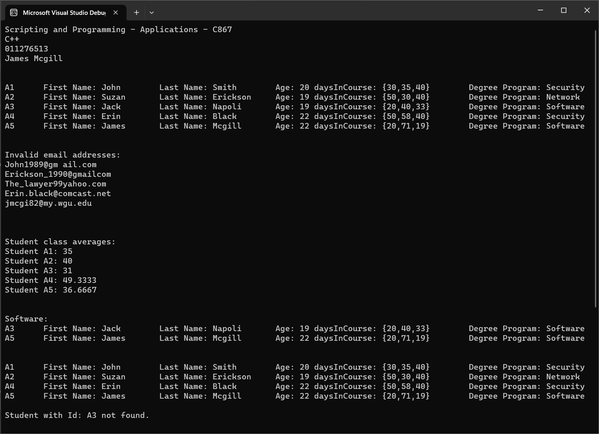

Projects

Package Delivery Project
The Problem:
The Western Governors University Parcel Service (WGUPS) needs to determine an efficient route and delivery distribution for their daily local deliveries (DLD) because packages are not currently being consistently delivered by their promised deadline. The Salt Lake City DLD route has three trucks, two drivers, and an average of 40 packages to deliver each day. Each package has specific criteria and delivery requirements that are listed.
The Western Governors University Parcel Service (WGUPS) needs to determine an efficient route and delivery distribution for their daily local deliveries (DLD) because packages are not currently being consistently delivered by their promised deadline. The Salt Lake City DLD route has three trucks, two drivers, and an average of 40 packages to deliver each day. Each package has specific criteria and delivery requirements that are listed.
The Solution:
This was one of my first algorithms projects, and thus completing it challenged me. In order to solve this problem, I created a linked list to store all locations and packages. Each location had access to all neighbor location, and had a customer add location method that used insertion sort to automatically sort the list each time a node was added, that way the neighbor locations would always be listed closest to farthest.
I then used a modified nearest neighbor algorithm to create the solution. The algorithm search each nearest neighbor and checked if it had already been delivered to. When the algorithm found an available neighbor, it added all packages from that neighbor to an appropriate truck based on any special conditions or requirements.

The Solution:
This was my first experience with C, and it definitely has a learning curve. I had a lot of prior experience with java and other OO Languages, but the pointers in C definitely made things difficult. This is why I included this more simply project in my list, this was a memorable and challenging project as I slowly learned the power behind C.
This project used regular expressions to parse data and clean it into usable strings that were then used to create a student object. The students were then added to a roster. The roster was used for validation or emails, student Ids, and calculating average gpa.
First C++ Project
The Problem:
You are hired as a contractor to help a university migrate an existing student system to a new platform using C language. Since the application already exists, its requirements exist as well, and they are outlined in the next section. You are responsible for implementing the part of the system based on these requirements. A list of data is provided as part of these requirements. This part of the system is responsible for reading and manipulating the provided data.
You are hired as a contractor to help a university migrate an existing student system to a new platform using C language. Since the application already exists, its requirements exist as well, and they are outlined in the next section. You are responsible for implementing the part of the system based on these requirements. A list of data is provided as part of these requirements. This part of the system is responsible for reading and manipulating the provided data.
The Solution:
This was my first experience with C, and it definitely has a learning curve. I had a lot of prior experience with java and other OO Languages, but the pointers in C definitely made things difficult. This is why I included this more simply project in my list, this was a memorable and challenging project as I slowly learned the power behind C.
This project used regular expressions to parse data and clean it into usable strings that were then used to create a student object. The students were then added to a roster. The roster was used for validation or emails, student Ids, and calculating average gpa.

Spring Boot and Thymeleaf
The Problem:
You are working for a company that licenses and customizes a software application to keep track of inventory in stores. Your job as a software developer is to customize this application to meet a specific customer’s needs. You will choose any type of customer you would like, but it must sell a product composed of parts. An example of products versus parts would be a customer that’s a bicycle shop: a bicycle is a product, and a set of two matching wheels is a part
You are working for a company that licenses and customizes a software application to keep track of inventory in stores. Your job as a software developer is to customize this application to meet a specific customer’s needs. You will choose any type of customer you would like, but it must sell a product composed of parts. An example of products versus parts would be a customer that’s a bicycle shop: a bicycle is a product, and a set of two matching wheels is a part
The Solution:
One of the biggest questions I had always had was, "How do things like php or java work with html?" This project was my first answer.
In this project, I used simple spring boot controllers, entities, CRUD repositories, services, and validations to create the backend for a simple GUI. The project used thymeleaf to display the front end, so at this point there was not any RESTful services, but it was a great introduction to persistence.

Full Stack REST Application
The Problem:
A travel agency has recently launched a complete overhaul of their front-end vacation bookings application using Angular and JavaScript. Lately, the front-end engineers have encountered various undocumented bugs when sending requests and fetching data from the back-end. Since the back-end was built in the early 1990s and the original developer has since retired and can no longer help troubleshoot, the existing team is concerned about the growing tech debt and lack of ongoing support. Your chief technology officer (CTO) decided to create a project to port over any mission-critical functionalities to a modern framework and has selected you, a software developer in Java, to start developing the minimally viable product (MVP) to migrate the legacy back-end to the modern Spring framework.
A travel agency has recently launched a complete overhaul of their front-end vacation bookings application using Angular and JavaScript. Lately, the front-end engineers have encountered various undocumented bugs when sending requests and fetching data from the back-end. Since the back-end was built in the early 1990s and the original developer has since retired and can no longer help troubleshoot, the existing team is concerned about the growing tech debt and lack of ongoing support. Your chief technology officer (CTO) decided to create a project to port over any mission-critical functionalities to a modern framework and has selected you, a software developer in Java, to start developing the minimally viable product (MVP) to migrate the legacy back-end to the modern Spring framework.
The Solution:
This is my first project where all the code was my own. I wrote the angular front end (using typescript, html, and css), the spring boot backend, and constructed the MySQL database for persistence. This project, though not heavy on logic, was the first time I developed a application and required a lot of planning. I had several entities (Vacation, Excursion, Customer, Cart, CartItem, ect.) each with varying relationships to the other entities. This project is where I really learned the importance of design. For example, I had to create detailed UML and ERD to keep my backend organized and I had to use the UML to create the database tables.

Multithreading and Internationalization
The Problem:
You are working for a company located in Toronto, Canada, that schedules hotel reservations. As a software developer, your job is to modify the Landon Hotel scheduling application to meet new requirements under new management. You will choose any application user you would like.
You are working for a company located in Toronto, Canada, that schedules hotel reservations. As a software developer, your job is to modify the Landon Hotel scheduling application to meet new requirements under new management. You will choose any application user you would like.
The Solution:
One of the more important concepts in optimization is multithreading. This project had requirements of meeting scheduling, displaying prices in different currencies, and detecting time zones to change currency. This project still implemented angular and spring boot, but it also used java multithreading to determine time zones and perform localization. Another thread was used to determine meeting times based on location. This was not a super demanding project, but it ensured that I was confortable with localization, Internationalization, and multithreading.

Machine Learning**
The Problem:
Liquor management is sometimes difficult due to innacurate ordering and point of sale prices. This application will have two requirements:
Liquor management is sometimes difficult due to innacurate ordering and point of sale prices. This application will have two requirements:
- Provide visualization of data
- Provide recommendations for sale prices based on a alcohol content and target profit margins.
The Solution:
This problem was very exciting and intimidating, this was one of my first real-world problem I solved using machine learning. Previously, I had used things like coppeliasim and pandorabots to create machine learning tools. However, this used python do several things: Load data from a database, clean the raw data, plot the data on several different graphs, and use a ordinary least squares algorithm to draw a line of regression and use that line to make predictions.

Database Management
The Problem:
This project was all about database management. The goal was to create several tables, populate them with sample data, and perform different joins, sorts, and other operations on them.
This project was all about database management. The goal was to create several tables, populate them with sample data, and perform different joins, sorts, and other operations on them.
The Solution:
This project was one of my first introductions to MySQL and postgresSQL, I will admit I found it very frustrating. I used MySQL scripts to do several things, and to query hundreds of rows of provided data. I was unable for a while to figure out how to properly join table from several different tables together. Eventually, I figured it out. I came up with a solution by creating my own crude version of a ERD without knowing what I was creating.

Quality Assurance
The Problem:
Create a quality Test plan for a banking company solution to a ticket request. The solution had two main requirements:
Create a quality Test plan for a banking company solution to a ticket request. The solution had two main requirements:
- If the business is more than 5 years old, the program should request the most recent 5 years of financial data, excluding the current year.
- If the business is less than 5 years old, the program should request every year of financial data since the business was started. Then, it will request future forecasts until the total amount of reports is equal to 5.
The Solution:
This project was one of a sequence of proposals/QA plans I wroted. This QA plan was connected to a previously written proposal for the software solution. The functional requirements, listed above, were needing to be tested as well as non-functional in-scope requirements I listed in the proposal. This assignment was the last one in the sequence, and I listed it because it really help me to understand just how important testing is and that, the test plan needs to be as good as possible, because bugs are going to happen anyways after deployment, but you should try to remove as many as possible.